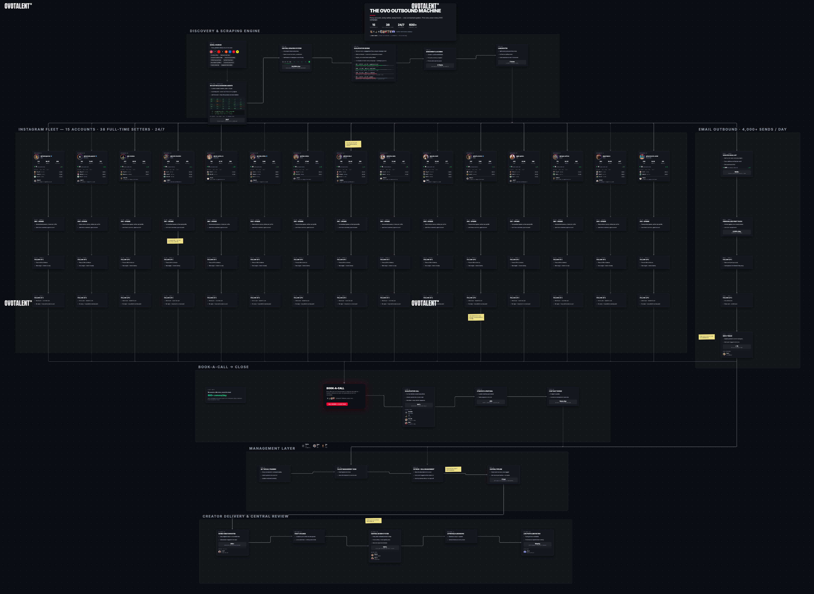

Brand campaign presentation · 2026
Influence,
operated.
Targeted creator campaigns, run by one accountable team from first outreach to live post.
OVO Talent
Strategy · talent · delivery
Strategy · talent · delivery
One accountable team · built for your brand
Your standard.
One owner from brief
to live post.
OVO casts, contracts, briefs, manages revisions, checks posting, and reports back. Your team stays in control without running every creator thread.
OVO TalentOperating layer
- 01CastFit with a reason
- 02CareWhite-glove service
- 03AlignTerms understood
- 04DeliverOne accountable owner
One accountable team carries the standard across every handoff.
Selected OVO clients
Direct OVO clients.
Direct client relationships across sport, performance, wellness, and creator culture.


Fitia · verified public Instagram snapshots
12.8M recorded public plays.
65 live Reels174.5K median24 measured creator accounts
 Public · sourced ↗
Juan Cortez · @juan.cortez3801.6Krecorded plays · 12.3K likes
Public · sourced ↗
Juan Cortez · @juan.cortez3801.6Krecorded plays · 12.3K likes
 Public · sourced ↗
Meghan · @megatronrunning430.4Krecorded plays · 2.6K likes
Public · sourced ↗
Meghan · @megatronrunning430.4Krecorded plays · 2.6K likes
 Public · sourced ↗
Angel · @itsangel_chloe382.9Krecorded plays · 1.7K likes
Public · sourced ↗
Angel · @itsangel_chloe382.9Krecorded plays · 1.7K likes
 Public · sourced ↗
Mackenzie · @mackenzie._.fordd302.3Krecorded plays · 3.8K likes
Public · sourced ↗
Mackenzie · @mackenzie._.fordd302.3Krecorded plays · 3.8K likes
 Public · sourced ↗
Nabiel · @french__phenom255.3Krecorded plays · 2.9K likes
Public · sourced ↗
Nabiel · @french__phenom255.3Krecorded plays · 2.9K likes
 Public · sourced ↗
Grant · @thegrantlarsen245.8Krecorded plays · 1.7K likes
Public · sourced ↗
Grant · @thegrantlarsen245.8Krecorded plays · 1.7K likes
These six posts alone: 2.42M plays · 24.9K likes · six of the 24 creator accounts in the measured dataset.
51/65 over 100K27 over 200K3 over 500K
Selected OVO programs · source-visible proof
Same system.
Three more brands.
Open real post sources where public counters exist. Where they do not, see the actual creative and operating record—clearly labeled.
123 switch cases
 Public source ↗
Colby · @colby.mullinss2.43Mrecorded views
Public source ↗
Colby · @colby.mullinss2.43Mrecorded views
 Daria · @ddfi.t1.59Mplays · 51.4K likes
Daria · @ddfi.t1.59Mplays · 51.4K likes
 Daria · @ddfi.t1.48Mrecorded views
Daria · @ddfi.t1.48Mrecorded views
 Daria · @ddfi.t1.03Mplays · 27.5K likes
Daria · @ddfi.t1.03Mplays · 27.5K likes
 Daria · @ddfi.t906Kplays · 25.5K likes
Daria · @ddfi.t906Kplays · 25.5K likes
13.4M recorded views/plays29-post source-clean subset207K median4 over 1M7 signed creators60+ deliverables


5 partnerships. 44 posted workflow rows in 83 days.
For Milan Manfredi and Samantha Baio alone, OVO’s tracker records delivery across four content formats.
- Stories
- 20 posted rows
- TikTok / synced
- 18 posted rows
- Feed
- 5 posted rows
- Reel
- 1 posted row
~11 months documented history5 executed creator partnerships


BEHARD
8 creators signed in 7 weeks.
Six agreements used recurring two-post monthly structures.
- 01Brenda GutierrezReel agreement
- 02Nathan Alexis2 posts / month
- 03Samantha BaioProgram agreement
- 04Giovanni Rowe2 posts / month
- 05Colby Mullins2 posts / month
- 06Natalie Cepeda2 posts / month
- 07Mia Spuler2 posts / month
- 08Anna Nelson2 posts / month
Week 1First → eighth signatureWeek 7
Precision casting · documented working history
Cast for fit.
Not reach.
Every match starts from the brief: audience trust, category credibility, creative format, geography, reliability, and commercial scope.
300+Signed creator partnership agreements
Across representation, campaigns, and repeat collaborations. Agreement records are the unit, not 300 unique active creators.

The OVO operating map · every system, one board
One map.
The whole machine.
Discovery, qualification, outreach across email and Instagram, CRM, campaign delivery, and finance. Built in-house, wired together, and operated every day.
Operating map abstracted for presentation. Live walkthrough on request.
Open the live board ↗White-glove creator service · representing your brand
Your brand should feel premium
to creators, too.
Every selected creator gets one OVO contact, one clear scope, and fast answers from first outreach through posting.
01 · Named concierge
One OVO contact owns questions, timing, and next steps.
02 · Creative support
Clear direction protects the idea without flattening the creator’s voice.
03 · One feedback line
Consolidated, approved notes replace conflicting requests.
04 · Professional closeout
Posting checks, files, links, and campaign admin stay organized.
The result: creators can focus on excellent work while your brand is experienced as prepared, decisive, and respectful.
Public FTC enforcement case · company anonymized
The campaign worked.
The protection did not.
The retailer pre-approved all 50 creator posts. The FTC alleged its agreements did not require paid or gifted-relationship disclosure—and none of the approved posts included it.
What commercial success did not prevent
FTC settlement → 20-year consent order
Federal Trade Commission · docket C-4576 · 2016 ↗
The OVO safeguard · creator-by-creator agreement briefing
Every signed creator
gets the call.
After your campaign is signed, OVO’s specialist legal partner separately contacts each contracted creator to review deliverables, rights, disclosures, deadlines, and posting obligations.
Supports the campaign. Does not replace your team’s own legal and compliance review.
- 01DeliverablesScope, formats, quantities, and required brand elementsReviewed
- 02RightsUsage, exclusivity, term, and permitted distributionReviewed
- 03DisclosureMaterial connection and campaign-specific requirementsReviewed
- 04PostingDeadlines, approvals, publication, and live-link obligationsReviewed
- 05AcknowledgmentQuestions and agreement understanding are documentedRecorded
OVO oversightDelivery is monitored. Exceptions are escalated to the right owner.
The campaign engine
Your team stays in control.
OVO runs the campaign.
One OVO lead owns every handoff from the approved brief through launch and reporting.
Brief
Objective, audience, message, deliverables, rights, timing.
Cast
Creator shortlist with rationale, fit, and commercial scope.
Contract
Rates, usage, exclusivity, whitelisting, approvals, dates.
Produce
Creator briefing, concepts, content, and delivery management.
Launch
Final approvals, publication schedule, links, and live checks.
Report
Results, performance review, creative learnings, and next move.
A workspace generated for Fitia
Approve content.
Skip the chase.
Review the exact frame, leave one clear note, track revisions, and see what is approved or due.
Review the exact frame
Keep one clean revision trail
Approve without chasing anyone
Demo workflow · Fitia posts are public-source; statuses, dates, and comments are simulated
Launch the interactive Fitia demo↗
OVO Talent
/
 FI
FI
FI
Overview
Deliverables
Performance
4 of 6 approved On schedule
Assets & approvals
Performance creator campaign
Pending review · 2
IG Reel · Maria · Draft v2Macro-tracking launch reel
Pending reviewDue in 2 days
 ▶
00:08 / 00:24
Product frame
▶
00:08 / 00:24
Product frame
00:00◆ Comment at 00:0800:24
Review thread · 2
Fitia00:08
Hold the app scan for one more beat. Keep the download CTA on the final frame.
OVO TalentDraft v2
Updated in v2. Timing adjusted and the final CTA is locked. Ready for review.
◆ At 00:08
Comment on this moment…
Approve v2Request revisions

The next move
Bring us the brief.
We’ll build the campaign.
Next review: campaign direction, targeted creator shortlist, legal guardrails, and commercial plan. Then we lock terms and move into contracting.
Targeted creators · one accountable team · every agreement understood before launch
Investment is scoped to creator mix, usage rights, and campaign volume→
ovotalent.
Brand presentation · Campaigns
01 / 12